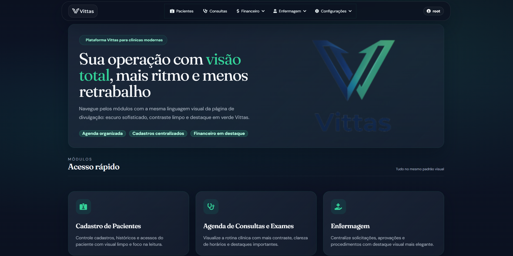

Django
PostgreSQL
JavaScript
Vittas - Software para clínicas
Sistema web para gestão de clínicas, com funcionalidades para controle de pacientes, agendamento de consultas e financeiro, visando otimizar a administração de serviços de saúde.
- Cadastro de pacientes, agendamento de consultas e controle financeiro
- Cadastro de médicos, especialidades e horários
- Prontuário digital para histórico médico
- Dashboard visual para análise de dados
Abrir demo
Repositório privado